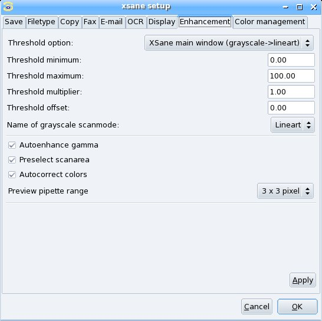

Index
XSane mode:

Scan options
Medium selection
Color management
Color correction:
Standard options window
Advanced options window
Preview:
Batch scan:
Setup:
|
You open the setup window via the menu preferences/setup in the
main window of xsane.

Threshold option:
There are three options available:
- Standard options window (lineart)
The threshold option is kept untouched. If the backend makes
available a "threshold" option you find it in the standard or advanced
options window. You have to do a new preview scan to see changes of the
threshold value.
- XSane main window (lineart)
If the backend makes available a "threshold" option it is moved
to the main window. The value range is normalized (see
THRESHOLD MINIMUM, MAXIMUM, MULTIPLIER, OFFSET).
You have to do a new preview scan to see changes of the threshold value.
- XSane main window (grayscale->lineart)
If the backend makes available a "threshold" option it is moved
to the main window. The preview scan is done in grayscale mode (see
NAME OF GRAYSCALE SCANMODE) and transformed to black/white. Changes
of the threshold value are visible in the preview window without a new preview
scan. The value range of the threshold option is normalized (see
THRESHOLD MINIMUM, MAXIMUM, MULTIPLIER, OFFSET).
Threshold minimum, maximum, multiplier, offset:
These values are used to make the threshold function of the
backends work the same way XSane does handle it. This is:
the threshold value defines the brightness level in % that is needed
to get a white point. A value of 0% creates a totally white image, a value
of 100% creates a totally black image.
If the threshold function of the backend does not cover the full range
(0-100% = white...black), you can reduce the range with the values MINIMUM
and MAXIMUM. If the backend defines another value range (e.g 0-255 ) you
have to enter a MULTIPLIER (2.55 for rang 0-255), with the OFFSET value
you can shift the range linear.
The calculation is:
backend_threshold = OFFSET + MULTIPLIER * xsane_threshold
where the user can select xsane_threshold in the range from MINIMUM to MAXIMUM.
Name of grayscale scanmode:
If you want to do a grayscale previewscan when lineart scanmode
is selected, you have to tell xsane the name of the grayscale mode. This
is because the scanmode is defined by the backend and differen backends
may use different names. You have to enter the original name (not translated)
case sensitive (take a look at the scanmode selection menu in the xsane
main window).
The name should be something like Gray.
|